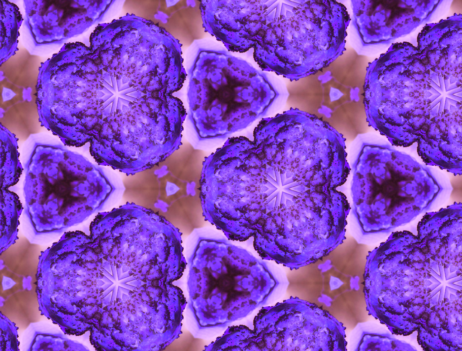
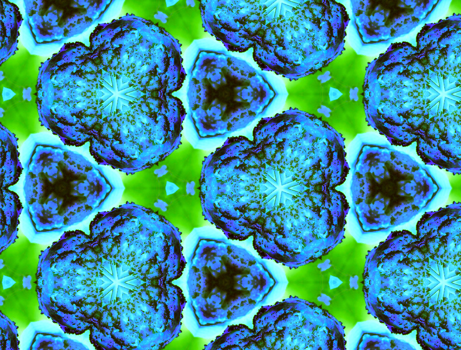

I used this royalty-free image and made a pattern out of it in Adobe Photoshop.
 This is the pattern I created from the image.
This is the pattern I created from the image.
 This is the pattern I created from the image, just in a different color palette.
 This is the pattern I created from the image, just in a different color palette.